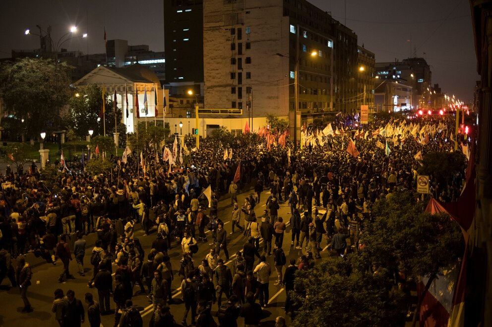
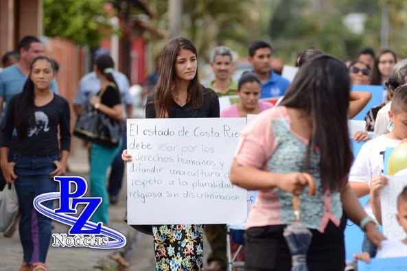

Religiosos toman control pacífico del Puente San Carlos en protesta contra la violencia
Una multitud de fieles se une en una marcha silenciosa para exigir paz y seguridad en una de las zonas más afectadas por la criminalidad San Carlos, 9 de junio de 2025 — Este lunes por la mañana, cerca de 400 integrantes del movimiento interreligioso “Luz y Esperanza” protagonizaron una manifestación pacífica sobre el histórico Puente San Carlos, en el corazón de la ciudad, para exigir al gobierno municipal y nacional una respuesta contundente ante el aumento de la violencia en la zona. La marcha, que comenzó con cantos, oraciones y consignas por la paz, culminó con una cadena humana sobre el puente, bloqueando parcialmente el tránsito por más de dos horas. Los manifestantes llevaban velas, pancartas con frases como “La fe no se rinde” y fotografías de víctimas de violencia reciente.
“Estamos hartos de vivir con miedo”
Ana Lucía Herrera, vocera del grupo, explicó que la acción fue una forma de llamar la atención sin recurrir a la violencia. “Ya no podemos quedarnos sentados mientras nuestros jóvenes son asesinados y nuestras comunidades viven atemorizadas. Esta es una marcha de fe, pero también de exigencia”, declaró.
En las últimas semanas, los barrios aledaños al puente San Carlos han sido escenario de varios episodios de violencia armada, incluyendo tres tiroteos que dejaron un saldo de cinco muertos y más de una decena de heridos. Los vecinos han denunciado la falta de presencia policial, iluminación y programas sociales. El alcalde de la ciudad, Roberto Cedeño, se pronunció horas después de la manifestación: “Entendemos la angustia de los ciudadanos y valoramos que se expresen de forma pacífica. Hemos ordenado reforzar la vigilancia en la zona y convocado una mesa de diálogo con los representantes del grupo Luz y Esperanza”. Por su parte, la Policía Nacional informó que monitoreó la protesta sin intervenir, al no haber incidentes ni actos de violencia. “Fue una movilización ejemplar”, indicó la comisaria general Elvira Muñoz.